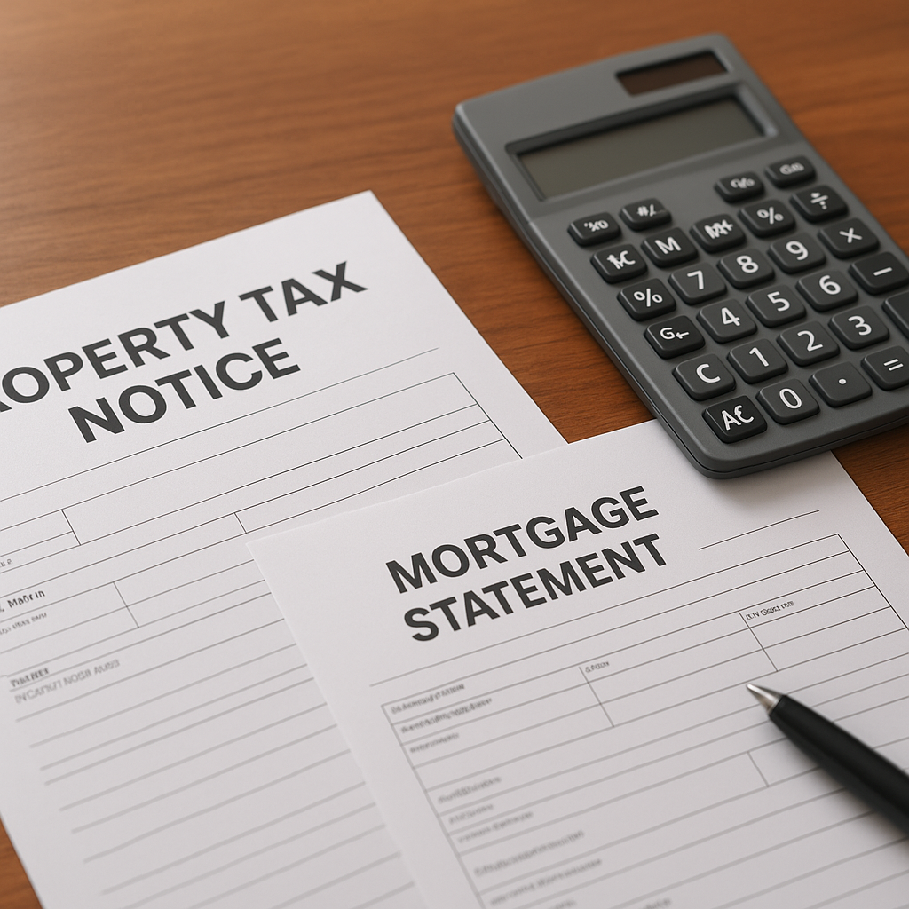

Dallas County voters rejected Proposition A on November 3, 2026, by a margin of 51.87% no to 48.13% yes. That means the proposed $0.248650 per $100 property tax rate — which would have funded homelessness, mental health, and housing programs — did not pass, and the 2026 Dallas County rate is now confirmed at the voter-approval rate of $0.224650 per $100 assessed value.
I'm Bond Peter Njoku, a Garland-based mortgage loan officer, and I want to explain exactly what this result means for homeowners and buyers in Dallas County — specifically for your escrow payment and mortgage qualification.
What are the three Dallas County property tax rates in play for 2026?
| Rate | Amount per $100 | Status |
|---|---|---|
| 2025 Adopted Rate | $0.215500 | Last year's rate (expired) |
| 2026 Voter-Approval Rate | $0.224650 | ✓ Confirmed — applies for 2026 |
| 2026 Proposed Rate (Prop A) | $0.248650 | ✗ Rejected Nov 3, 2026 |
Even with Prop A failing, the Dallas County rate is still going up. The voter-approval rate of $0.224650 is higher than the 2025 rate of $0.215500 — an increase of $0.009150 per $100. That increase is automatic and does not require a ballot; the county could adopt up to the voter-approval rate without an election. The election was only needed because the county wanted to go above that level (the proposed $0.248650 required voter approval).
What does the confirmed $0.224650 rate mean for the county portion of my escrow?
The Dallas County rate is one piece of your total property tax bill. For a home inside the city of Dallas, your total effective property tax rate typically includes the county, the city, the school district (Dallas ISD is $1.0948, some suburbs differ), the hospital district (Parkland), and other taxing entities. The combined effective rate for most Dallas city homeowners runs approximately 2.0% — about $2.00 per $100 assessed value.
The county portion at $0.224650 per $100 works out as follows:
| Assessed Value | Annual County Tax (at $0.224650) | Monthly Escrow (County Only) | Annual Savings vs. Prop A |
|---|---|---|---|
| $250,000 | $562 | $47/mo | $60/yr |
| $300,000 | $674 | $56/mo | $72/yr |
| $350,000 | $786 | $66/mo | $84/yr |
| $400,000 | $899 | $75/mo | $96/yr |
| $500,000 | $1,123 | $94/mo | $120/yr |
The "Annual Savings vs. Prop A" column shows what Prop A's defeat saves you on the county portion only. For most Dallas County homeowners, this is $60–$120 per year less than what the failed measure would have added — meaningful but not life-changing. The more important number is the total effective rate, which still increases year-over-year as the voter-approval rate ($0.224650) is applied for 2026.
How does the 2026 Dallas County rate compare to other DFW counties?
| County | 2026 Effective Rate (Approx.) | Annual Tax on $350K Home | Monthly Escrow |
|---|---|---|---|
| Dallas County | ~2.00% | $7,000 | $583/mo |
| Tarrant County | ~2.20% | $7,700 | $642/mo |
| Denton County | ~1.80% | $6,300 | $525/mo |
| Collin County | ~1.50% | $5,250 | $438/mo |
| Rockwall County | ~1.80% | $6,300 | $525/mo |
| Kaufman County | ~1.90% | $6,650 | $554/mo |
The effective rate differences between counties are significant for mortgage qualification. A $350,000 home in Collin County carries $438/month in property tax escrow; the same price in Tarrant County carries $642/month — a $204/month difference that directly affects your debt-to-income ratio. This is one reason buyers with tight DTIs often find it easier to qualify for Collin County purchases than Tarrant County ones at the same price point.
When will Dallas County 2026 property tax bills be mailed?
Dallas County had delayed mailing 2026 property tax bills pending the November 3 Prop A vote. With that vote now complete and the $0.224650 rate certified, the Dallas County Tax Assessor-Collector is in the process of calculating bills and preparing mailings. Historically, bills are mailed within a few weeks of the November certification.
The payment deadline is January 31, 2027. Homeowners who pay through escrow do not need to take any action — your servicer will pay from your escrow account. Homeowners without escrow accounts should watch for the bill and pay before January 31 to avoid the 7% penalty plus 1% per month interest that accrues on late payments.
How does the confirmed 2026 rate affect buyers closing on Dallas County homes now?
If you are under contract on a Dallas County home right now, the confirmed $0.224650 rate gives your title company a definitive number for calculating property tax prorations at closing. Before the election was resolved, some transactions were estimated using the proposed higher rate. With the lower voter-approval rate confirmed, any escrow overage already collected at the proposed rate may be credited back or refunded.
I helped a couple under contract on a home in the Lakewood area of Dallas — $425,000 purchase price, closing late November 2026. The initial escrow estimate used the proposed $0.248650 rate, which put their total PITI at $3,210/month including escrow. With the confirmed $0.224650 rate, the county portion of their escrow drops by $8/month, bringing their PITI to $3,202/month. Not a huge change, but the direction matters for their DTI certification, and I am updating the figures in their loan file now.
Does Prop A failing affect the City of Dallas or DISD tax rates?
No. Proposition A was a Dallas County ballot measure only. The City of Dallas and Dallas ISD each set their own tax rates separately, and those were not on the November 3 ballot. Your total property tax bill still includes those components. For a city of Dallas homeowner, the DISD rate ($1.0948 per $100) is typically the largest single component — several times larger than the county rate. The county vote had no effect on the school district rate.
Frequently Asked Questions
What is the Dallas County property tax rate for 2026 after Prop A failed?
I'm Bond Peter Njoku (NMLS #2670329) and the confirmed 2026 Dallas County property tax rate is $0.224650 per $100 assessed value — the voter-approval rate that applied automatically when Proposition A was rejected by voters on November 3, 2026. The proposed (failed) rate would have been $0.248650 per $100. The 2025 rate was $0.215500 per $100, so there is still a year-over-year increase, but it is smaller than what Prop A would have imposed. For the county portion on a $350,000 home, that works out to about $786 per year or $65 per month in escrow. Call or text me at 469-545-7180 to discuss how this affects your mortgage qualification.
When will Dallas County 2026 property tax bills be mailed?
I'm Bond Peter Njoku (NMLS #2670329) and Dallas County had delayed mailing 2026 property tax bills pending the November 3 Prop A vote. With the vote now complete and the voter-approval rate of $0.224650 confirmed, the county tax assessor-collector will be preparing and mailing bills. Statements are typically mailed within a few weeks of certification. The standard payment deadline remains January 31, 2027 — unpaid balances after that date accrue a 7% penalty plus interest. If you are under contract on a Dallas County home and want to verify how property tax prorations will work at your closing, call or text me at 469-545-7180.
How does the Dallas County 2026 property tax rate affect my mortgage escrow?
I'm Bond Peter Njoku (NMLS #2670329) and your mortgage escrow is calculated using the most current available tax rate for your property. At $0.224650 per $100 — the confirmed 2026 Dallas County rate — the county portion on a $300,000 assessed home is approximately $674 per year or $56 per month in escrow. This is just the county portion; your total property tax escrow includes city, school district, hospital district, and other taxing entity levies, which typically bring the effective rate to around 2.0% for Dallas city homeowners — about $500/month total on a $300,000 assessed home. Call or text me at 469-545-7180 and I will calculate the full PITI on a specific address you are considering.
Does the Prop A rejection change whether I can qualify for a mortgage in Dallas County?
I'm Bond Peter Njoku (NMLS #2670329) and because Prop A failed, the 2026 Dallas County rate is $0.224650 — lower than the proposed $0.248650 by $0.024 per $100. On a $350,000 home, that difference is $84 per year or $7 per month less in escrow than the proposed rate would have added. That margin is small enough that most underwriters would approve both scenarios, but every dollar matters at the margins of qualifying. The bigger escrow variable is usually the school district rate, which varies by ISD. I can analyze your specific property address and run the numbers to confirm your PITI and DTI qualification. Text me at 469-545-7180.
Buying a Dallas County Home? Let's Calculate Your Full PITI.
I'm Bond Peter Njoku (NMLS #2670329). Now that the 2026 Dallas County rate is confirmed, I can give you an accurate monthly payment estimate including escrow — not an approximation. Call or text me at 469-545-7180, message me on WhatsApp, or start your pre-approval online.